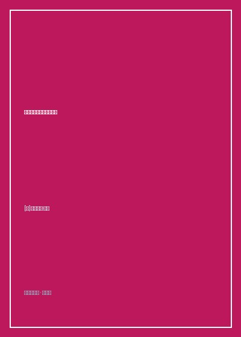

《工作、消费主义和新穷人》

总体观点
《工作、消费主义和新穷人》是理解当代全球不平等与社会断裂的关键思想路标。鲍曼敏锐指出，现代性经历了一场剧烈的范式转移：在早期工业社会，穷人被视为'产业后备军'，工作伦理是将其规训为劳动力的道德工具；而在当代消费社会，衡量个体价值的唯一尺度变成了'购买力与消费欲望'。
未能融入消费盛宴的人被无情定义为'有缺陷的消费者'（Defective Consumers）。他们不仅在物质上陷入匮乏，在道德上更被主流话语污名化为游手好闲、自甘堕落的害虫。福利国家被拆毁为冷酷的社会防卫机制，贫困问题从社会正义问题蜕变为治安隔离问题。
全书以振聋发聩的人道主义怒吼宣告：当社会的终极目标变成不断制造无休止的虚假欲望，人类便亲手铸造了一座将弱者作为'废弃人口'源源不断填埋的现代地狱。重拾对弱者的道德关怀，是挽救文明崩溃的唯一窄门。
核心观点
-
1. 工作伦理的真实历史角色：将自由工匠规训为工厂苦役
早期工业革命推崇工作伦理并非出于对劳动的尊重，而是资本家为了强迫习惯自主节奏的农民和手艺人屈服于流水线非人节奏的意识形态大棒。
英国圈地运动后设立的济贫院与劳教所，通过提供极其严酷的饥饿环境逼迫底层走入纺织厂接受十二小时机械劳作。 -
2. 从生产者社会到消费者社会：欲望流水线的全面接管
当工业产能过剩时，社会的头等大事不再是生产商品，而是生产源源不断的'不满足感'与虚荣欲望，让大众误以为消费等于自由。
智能手机年年更新换代制造审美过时感，诱导大众刷信用卡超前透支购买并非生存必需的虚荣产品。 -
3. 新穷人的诞生：从产业后备军沦为系统性废弃人口
在高度自动化与金融化的时代，资本不再需要海量廉价劳动力，穷人失去了被剥削的价值，沦为既不能生产又无法消费的'多余垃圾'。
传统工业铁锈带被裁掉的老工人面对自动化机械臂再也找不到任何工作岗位，在领救济金的队伍中体验彻底的无用感。 -
4. 福利国家的污名化拆毁：从公民权利蜕变为懒汉施舍
新自由主义将保障全体国民底线尊严的福利制度重新包装为养懒汉的财政黑洞，将贫困归咎于个人品德败坏以推卸国家责任。
政客们在电视上大肆宣扬个别冒领救济金的极端案例，借此煽动纳税人对穷人的愤怒，大肆削减公共医疗与公租房预算。 -
5. 社会治安化的隔离政治：将结构性不公包装为犯罪防范
面对日益庞大的贫困人口，统治精英放弃了消除贫困的努力，转向修筑高墙、部署铁丝网与大规模扩建监狱将其从公众视线中物理抹除。
富人区周边设立带刺铁丝网和全天候武装巡逻犬，城市公园长椅被刻意设计成带有中间扶手的防流浪汉安睡造型。
全书结构
-
导言：工作伦理的起源与演变
梳理工业革命初期工作伦理在清教主义与工厂制度结合下的诞生历程，点明全书对现代工作神话的解构主旨。
回顾19世纪工厂主如何宣扬'不劳者不得食'的严苛教条，将其包装成救赎灵魂的唯一道德天梯。 -
第一章 工作伦理的意义：从工厂纪律到道德高调的规训
深入剖析早期资本家如何利用工作伦理消除劳动者的闲暇时间与反抗意识，将其改造为听从汽笛指挥的机械齿轮。
分析泰勒制科学管理法如何用秒表精确度量工人的每一次弯腰动作，彻底消灭工人的身体自主权。 -
第二章 从工作伦理到消费美学：消费社会的欲望流水线
探讨战后西方社会生活重心的根本迁移：从以辛勤积蓄为美德转向以感官体验、即时满足和时尚炫耀为核心的消费美学。
商场橱窗与广告代言人如何将商品包装成个性与阶层的象征，将无法消费的人降维为精神上的二等公民。 -
第三章 福利国家的兴起与衰落：从安全网到财政包袱的污名化
追溯贝弗里奇报告奠定的战后福利社会黄金时代，揭示新自由主义浪潮如何逐步侵蚀去商品化的社会保障安全网。
撒切尔主义与里根经济学如何通过大幅减税与削减福利支出，将社会风险全盘转嫁给脆弱无助的工薪家庭。 -
第四章 工作伦理与新穷人：从'产业后备军'到'废弃人口'
核心理论高潮：界定'新穷人'的本质特征——他们不仅贫穷，而且在消费社会的评估体系中完全丧失了存在正当性。
对比传统穷人拥有罢工与谈判权，当代新穷人甚至连作为谈判对手的资格都被剥夺，沦为纯粹的被管束对象。 -
第五章 全球化与过剩人口：被驱逐到社会边缘的无用之人
将视野拓展至全球南北鸿沟，探讨第三世界原住民与难民如何在跨国资本流动中被连根拔起、成为全球游荡的'过剩垃圾'。
跨国矿业公司霸占拉美热带雨林水土资源，将当地失地农民逼入里约热内卢寸草不生的贫民窟悬崖苟延残喘。 -
第六章 新穷人的前景：在普遍的不安全感中寻找未来的出路
总结全书批判，探讨普遍无条件基本收入（UBI）等激进构想在重建社会信任与人类尊严方面的可能性。
鲍曼发出振聋发聩的人道主义警示：'衡量一个社会的文明程度，绝非看其创造了多少富豪，而是看其如何对待最脆弱的人'。